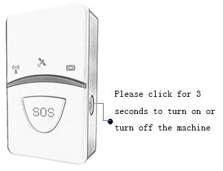
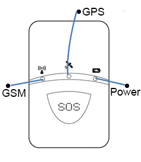
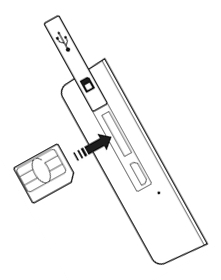
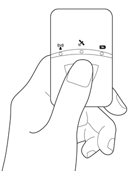

PT-718 Personal Tracker
Cover

Bundle Tracker
1.Install SIM card inthedevice, device support Micro SIM card , unsupport CDMA;(Insert relative picture)
2.Turn on the device: Long press Power Key for 2 second to turn on /off the device. (Insert relative picture)
3.Start APP : Lite Guardian.
4.Register new account or log in exist account.
5.Scan the QR code on the back of device.(Insert relative picture).
6.System will bundle the tracker automatically in a minute.
Tracker Instruction
1、Led Instruction

2.Led Status Instruction
| Name | Description |
|---|---|
| Power LED | Red 1.Charging: on； 2.On & Unpositioning: On until position； 3.Positioning: Off 4.SOS Alarm: sharp blinking , 1S on & 1S off, lasting 20S 5.Low Voltage: slow blinking, 1S on & 7S off |
| GSM LED | Login successfully，1S on & 2S off |
| GPS LED | Positioning Successfully，1S on & 2S off |
3.SIM Card Installation
Turn on the cover of SIM interface.
Insert SIM card
Close the cover of interface
Support Micro SIM card, Don't support CDMA network at the moment

4.SOS Key
Long press SOS for 3S until red LED blinking if there is a risk, tracker will send the alarm to the urgent contact.

5.Charging
Connect the adapter
Red LED on, Charging
Red LED off, Power full

APN SETTING
If you don't use the SIM card which along with the device ,please set the correct APN at the APP at first, avoiding tramitting data failure as APN is incorrect.
Setting: APP Setting APP Setting FillinAPN(get APN parameters from the carrier)
Notes: While setting APN , please ensure the device works properly, GSM indicator is slow blinking(SIM card should support SMS ).
Accessories
1.Micro USB cable
2.Lanyard
FQA
1.Why can't power on？
An：The power may use out during transportation, please charge it before turn on it .
2.Why bundle device failure?
An: Bundling device need high quality network of GSM, please keep the device in a suitable environment.
3.Why can't position successfully?
An: The device should be attached on the back of the pet and front up.Also at the hollowness place, then the device can position correctly. Please check the attached position and the surroundings where the pet in.Better locate in open outdoor area for the first time.
4.Why not provide adapter?
AN: For sake of enviromental protection ,support the mainstream phone adapters. Select the a suitable one for charging.
Attentions
1.One piece of device only be bundled by one account , and can be authorized to other three accounts by the main account. The authorized account can check the device status and setting the parameters about tracking ,but cann't change the main parameters such as APN ect.
2.Keep the product away from the fire、high temperature surroundings.
3.The function of location won't work when the power turn off or out of GSM network.
Customer service
Please contact Local Retailer or our After-sales Service Center
Contact information
Welcome to contact with us if you have any queries and recommends.
Overseas
E-mail:sales@castelbds.com
Website:www.lite-guardian.com
Service Tel.:+8675586018742
Hong kong
Service Tel.:+852-26273380
Email:cs-liteguardian@castelbeidou.com
China
Service QQ:3106893070
Service Tel.:0755-8601 8738